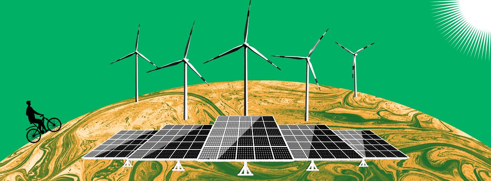
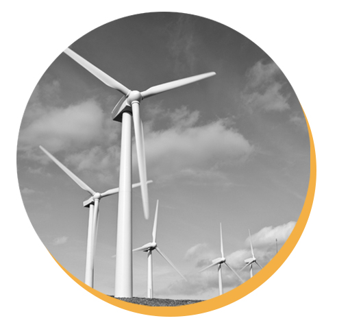
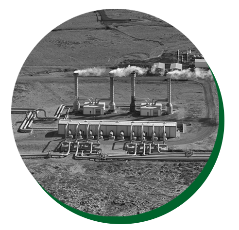
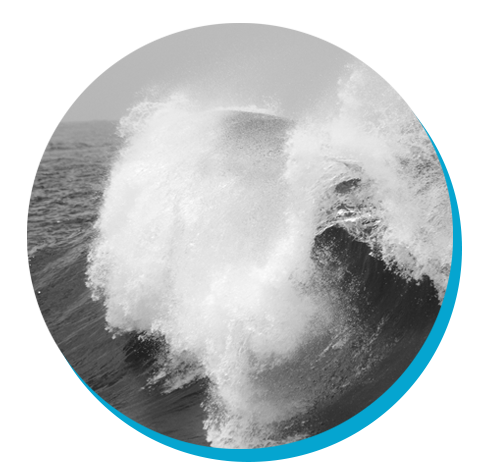

الطاقة المتجددة
ما هي الطاقة المتجددة؟
الطاقة المتجددة هي طاقة ناتجة عن مصادر طبيعيةتتجدد بمعدل يفوق ما يتم استهلاكه. أشعة الشمس والرياح، على سبيل المثال، من المصادر التي تتجدد باستمرار. وإن مصادر الطاقة المتجددة وفيرة وموجودة في كل مكان حولنا.
بالمقابل، الوقود الأحفوري (الفحم والنفط والغاز) من الموارد غير المتجددة التي يستغرق تشكيلها مئات الملايين من السنين. ويتسبب الوقود الأحفوري، عند حرقه لإنتاج الطاقة، في انبعاثات ضارة من غازات الدفيئة، مثل ثاني أكسيد الكربون.
أما الانبعاثات الناجمة عن توليد الطاقة المتجددة، فهي أقل بكثير من تلك الناجمة عن حرق الوقود الأحفوري. ولهذا يعد التحول من الوقود الأحفوري، الذي يمثل حاليًا حصة الأسد من الانبعاثات، إلى الطاقة المتجددة أمرًا أساسيًا لمعالجة أزمة المناخ.
الطاقة المتجددة حاليا أقل تكلفة في معظم البلدان، وهي تخلق وظائف أكثر بثلاث مرات من الوقود الأحفوري

فيما يلي بعض أهم مصادر الطاقة المتجددة:

الطاقة الشمسية
الطاقة الشمسية هي الأكثر وفرة من بين جميع مصادر الطاقة ويمكن حتى توليدها في الطقس الغائم. يفوق معدل اعتراض الأرض للطاقة الشمسية بحوالي 10000 مرةمعدل استهلاك البشر للطاقة.
ويمكن لتكنولوجيات الطاقة الشمسية توفير الحرارة والتبريد والإضاءة الطبيعية والكهرباء والوقود لمجموعة من التطبيقات. وتعمل تكنولوجيات الطاقة الشمسية على تحويل أشعة الشمس إلى طاقة كهربائية إما من خلال الألواح الكهروضوئية أو من خلال المرايا التي تركز الإشعاع الشمسي.
وإن لم تكن جميع البلدان تتمتع بالطاقة الشمسية على حد سواء، فإن المساهمة الكبيرة في مزيج الطاقة من الطاقة الشمسية المباشرة ممكنة لكل بلد.
لقد تراجعت تكلفة تصنيع الألواح الشمسية بشكل كبير في العقد الماضي، مما جعل الطاقة الشمسية في متناول الجميع وغالبًا الأقل تكلفة. تستخدم الألواح الشمسية لمدة 30 عامًا تقريبًا، وتختلف درجاتها حسب نوع مواد تصنيعها.

طاقة الرياح
طاقة الرياح مستخرجة من الطاقة الحركية للرياح باستخدام توربينات الرياح الكبيرة الموجودة على اليابسة (البرية) أو في البحر أو المياه العذبة (البحرية). تستخدم طاقة الرياح منذ آلاف السنين، غير أن تكنولوجيات طاقة الرياح البرية والبحرية قد تطورت خلال السنوات القليلة الماضية لإنتاج أكبر حجم من الكهرباء باستخدام توربينات أطول وأقطار دوارة أكبر.
على الرغم من أن متوسط سرعات الرياح يختلف اختلافًا كبيرًا حسب الموقع، فإن الإمكانات التقنية العالمية لطاقة الرياح تتجاوز إنتاج الكهرباء العالمي، وتوجد إمكانات وافرة في معظم مناطق العالم لتمكين نشر طاقة الرياح بشكل كبير.
تتمتع أجزاء كثيرة من العالم بسرعات رياح قوية، ولكن أفضل المواقع لتوليد طاقة الرياح تكون في بعض الأحيان بعيدة. توفر طاقة الرياح البحرية إمكانات هائلة.

الطاقة الحرارية الأرضية
تستخدم الطاقة الحرارية الأرضية الطاقة الحرارية المتوفرة في باطن الأرض. ويتم استخراج الحرارة من الخزانات الحرارية الأرضية باستخدام آبار أو وسائل أخرى.
وتعرف الخزانات الساخنة بدرجة كافية طبيعياً والقابلة للنفاذ بالخزانات الحرارية المائية، في حين يطلق على الخزانات الساخنة بدرجة كافية والتي يتم تحسينها بالتحفيز الهيدرولي إسم أنظمة الطاقة الحرارية الأرضية المحسنة.
بمجرد وصولها إلى السطح، يمكن استخدام سوائل بدرجات حرارة مختلفة لتوليد الكهرباء. وتعد تكنولوجيا توليد الكهرباء من الخزانات الحرارية المائية ناضجة وموثوقة، فهي تستعمل منذ أكثر من 100 عام.
الطاقة الكهرمائية
تستخدم الطاقة الكهرمائية طاقة المياه المتدفقة من الأعلى إلى الأسفل. ويمكن أن تتولد من الخزانات والأنهار. وتعتمد محطات تخزين الطاقة الكهرمائية على المياه المخزنة في خزان، بينما تستغل محطات الطاقة الكهرومائية في مجرى النهر الطاقة من مجرى النهر.
غالبًا ما يكون لخزانات الطاقة الكهرمائية استخدامات متعددة: توفير مياه الشرب ومياه الري، والتحكم في الفيضانات والجفاف، وخدمات الملاحة، وإمدادات الطاقة.
وتعد الطاقة المائية حاليًا أكبر مصدر طاقة متجددة في قطاع الكهرباء. وهي تعتمد بشكل عام على أنواع هطول الأمطار المستقرة، وقد تتأثر سلبًا بحالات الجفاف أو التغيرات في النظم البيئية التي تؤثر على أنواع هطول الأمطار.
كما يمكن أن تؤثر البنية التحتية اللازمة لتوليد الطاقة الكهرمائية على النظم البيئية بطريقة سلبية. لهذا السبب، يعتبر الكثيرون الطاقة الكهرمائية الصغيرة النطاق خيارًا أكثر مراعاة للبيئة، يناسب بشكل خاص المجتمعات في المناطق النائية.

الطاقة البحرية
تُستمد الطاقة البحرية من التكنولوجيات التي تستخدم الطاقة الحركية والحرارية لمياه البحر (الأمواج أو التيارات على سبيل المثال) لإنتاج الكهرباء أو الحرارة.
ولا تزال أنظمة الطاقة البحرية في مرحلة مبكرة من التطور، مع استكشاف عدد من النماذج الأولية لأجهزة الموجات وتيارات المد والجزر. وتتجاوز الإمكانات النظرية للطاقة البحرية بكثير متطلبات البشر الحالية من الطاقة .